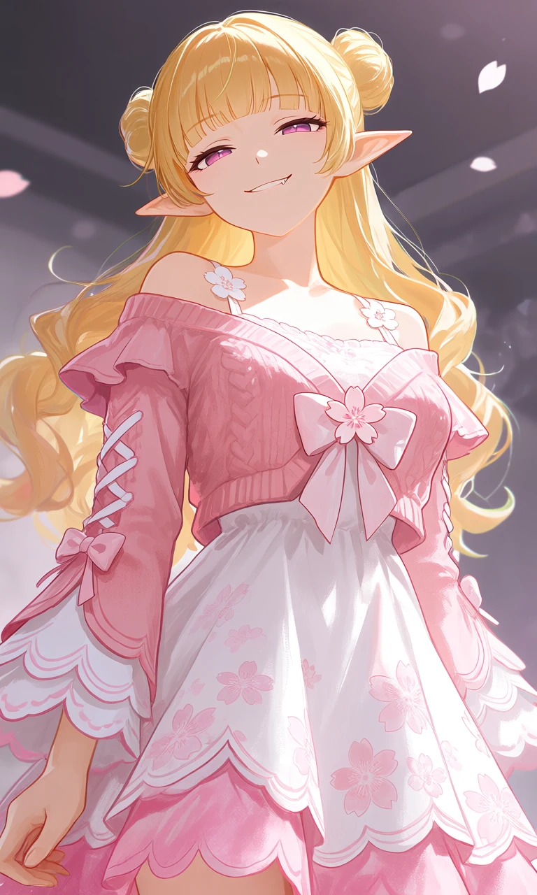
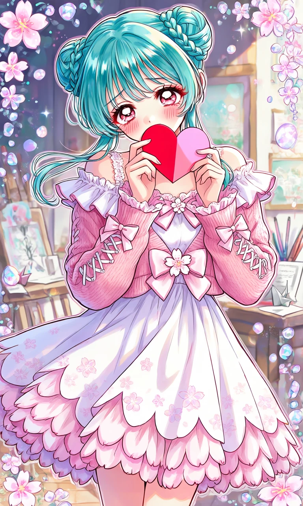

Sakura Sugar

Outfit Prompt
The Dress' color is primarily white. With Delicate pink cherry blossom (sakura) flowers print scattered across the fabric. The dress' neckline is straight across, with thin floral spaghetti straps visible under the cardigan. The skirt is a flared A-line shape that ends above the knee, with the hem is a multi-layered scalloped "petal" edges that mimic sakura petals, with pink shading on the ruffles. The silhouette of the dress is a soft and flowy, giving it a youthful, twirly feel.
The cropped closed cardigan color is Soft pink with knitted texture. The cardigan is cropped to sit just under the bust or at the natural waist, letting the white dress show underneath. The cardigan neckline is off-the-shoulder with a wide, ruffled frill that drapes beautifully over the shoulders and upper arms. A small white flower embellishment sits at the center front with a large matching pink bow. The sleeves are long, flared with multiple layers of ruffled "petal" cuffs. The sleeves have decorative white lace-up details (like corset-style X lacing) running down the upper arms and cute pink bows placed on the sleeves. On the front of the cardigan has a big light pink bow with sakura blossom in the middle as the focal point.
Outfit Examples



